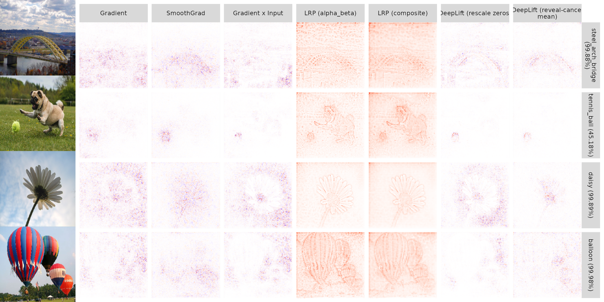

Example 3: ImageNet with keras
Source:vignettes/articles/Example_3_imagenet.Rmd
Example_3_imagenet.RmdThis is a rather short article, just to illustrate the use of the innsight package on a few images of the ImageNet dataset and pre-trained keras models. For more detailed information about the package and the implemented methods we refer to this article and for simpler but in detailed explained examples we kindly recommend to Example 1 and Example 2.
In this example, we want to apply the innsight package on pre-trained models on the ImageNet dataset using keras. This dataset is a classification problem of images in \(1000\) classes containing over \(500\) images per class. We have selected examples of a few classes each and will analyze them with respect to different networks in the following.


Preprocess images
The original images all have different sizes and the pre-trained models all require an input size of \(224 \times 224 \times 3\) and the channels are zero-centered according to the channel mean of the whole dataset; hence, we need to pre-process the images accordingly, which we will do in the following steps:
# Load required packages
library(keras)
library(innsight)
# Load images
img_files <- paste0("images/", c("image_1.png", "image_2.png", "image_3.png", "image_4.png"))
images <- k_stack(lapply(img_files,
function(path) image_to_array(image_load(path, target_size = c(224, 224)))))
# now 'images' is a batch of 4 images of equal size 224x224x3
dim(images)
#> [1] 4 224 224 3
# preprocess images matching the conditions of the pre-trained models
images <- imagenet_preprocess_input(images)Method configuration
Besides the images, we also need the labels of the \(1000\) classes, which we get via a trick
with the imagenet_decode_predictions() function:
# get class labels
res <- imagenet_decode_predictions(array(1:1000, dim = c(1,1000)), top = 1000)[[1]]
#> Downloading data from https://storage.googleapis.com/download.tensorflow.org/data/imagenet_class_index.json
#>
8192/35363 [=====>........................] - ETA: 0s
35363/35363 [==============================] - 0s 0us/step
imagenet_labels <- res$class_description[order(res$class_name)]Last but not least, we define the configurations for the methods we want to apply to the images and the models. This is a list that contains the method call, method name and the corresponding method arguments. For more information to the methods and the method-specific arguments, we refer to the in-depth vignette.
config <- list(
list(
method = Gradient$new,
method_name = "Gradient",
method_args = list()),
list(
method = SmoothGrad$new,
method_name = "SmoothGrad",
method_args = list(n = 10)),
list(
method = Gradient$new,
method_name = "Gradient x Input",
method_args = list(times_input = TRUE)),
list(
method = LRP$new,
method_name = "LRP (alpha_beta)",
method_args = list(
rule_name = list(BatchNorm_Layer = "pass", Conv2D_Layer = "alpha_beta",
MaxPool2D_Layer = "alpha_beta", Dense_Layer = "alpha_beta",
AvgPool2D_Layer = "alpha_beta"),
rule_param = 1)),
list(
method = LRP$new,
method_name = "LRP (composite)",
method_args = list(
rule_name = list(BatchNorm_Layer = "pass", Conv2D_Layer = "alpha_beta",
MaxPool2D_Layer = "epsilon", AvgPool2D_Layer = "alpha_beta"),
rule_param = list(Conv2D_Layer = 0.5, AvgPool2D_Layer = 0.5,
MaxPool2D_Layer = 0.001))),
list(
method = DeepLift$new,
method_name = "DeepLift (rescale zeros)",
method_args = list()),
list(
method = DeepLift$new,
method_name = "DeepLift (reveal-cancel mean)",
method_args = list(rule_name = "reveal_cancel", x_ref = "mean"))
)In order to keep this article clear, we define a few utility functions below, which will be used later on.
Utility functions
# Function for getting the method arguments
get_method_args <- function(conf, converter, data, output_idx) {
args <- conf$method_args
args$converter <- converter
args$data <- data
args$output_idx <- output_idx
args$channels_first <- FALSE
args$verbose <- FALSE
# for DeepLift use the channel mean
if (!is.null(args$x_ref)) {
mean <- array(apply(as.array(args$data), c(1, 4), mean), dim = c(1,1,1,3))
sd <- array(apply(as.array(args$data), c(1, 4), sd), dim = c(1,1,1,3))
args$x_ref <- torch::torch_randn(c(1,224,224,3)) * sd + mean
}
args
}
apply_innsight <- function(method_conf, pred_df, FUN) {
lapply(seq_len(nrow(pred_df)), # For each image...
function(i) {
do.call(rbind, args = lapply(method_conf, FUN, i = i)) # and each method...
})
}
add_original_images <- function(img_files, gg_plot, num_methods) {
library(png)
img_pngs <- lapply(img_files,
function(path) image_to_array(image_load(path, target_size = c(224, 224))) / 255)
gl <- lapply(img_pngs, grid::rasterGrob)
gl <- append(gl, list(gg_plot))
num_images <- length(img_files)
layout_matrix <- matrix(c(seq_len(num_images),
rep(num_images + 1, num_images * num_methods)),
nrow = num_images)
list(grobs = gl, layout_matrix = layout_matrix)
}Pre-trained model VGG19
Now let’s analyze the individual images according to the class that
the model VGG19 (see ?application_vgg19 for details)
predicts for them. In the innsight package, these
output classes have to be chosen by ourselves because a calculation for
all \(1000\) classes would be too
computationally expensive. For this reason, we first determine the
corresponding predictions from the model:
# Load the model
model <- application_vgg19(include_top = TRUE, weights = "imagenet")
#> Downloading data from https://storage.googleapis.com/tensorflow/keras-applications/vgg19/vgg19_weights_tf_dim_ordering_tf_kernels.h5
#>
8192/574710816 [..............................] - ETA: 0s
589824/574710816 [..............................] - ETA: 48s
2654208/574710816 [..............................] - ETA: 21s
4202496/574710816 [..............................] - ETA: 27s
7438336/574710816 [..............................] - ETA: 19s
9166848/574710816 [..............................] - ETA: 18s
13639680/574710816 [..............................] - ETA: 14s
17899520/574710816 [..............................] - ETA: 12s
21078016/574710816 [>.............................] - ETA: 11s
24313856/574710816 [>.............................] - ETA: 11s
29810688/574710816 [>.............................] - ETA: 10s
33562624/574710816 [>.............................] - ETA: 10s
36831232/574710816 [>.............................] - ETA: 9s
40361984/574710816 [=>............................] - ETA: 9s
41951232/574710816 [=>............................] - ETA: 9s
45252608/574710816 [=>............................] - ETA: 9s
48709632/574710816 [=>............................] - ETA: 9s
50503680/574710816 [=>............................] - ETA: 9s
53673984/574710816 [=>............................] - ETA: 9s
57581568/574710816 [==>...........................] - ETA: 9s
62300160/574710816 [==>...........................] - ETA: 8s
65355776/574710816 [==>...........................] - ETA: 8s
68567040/574710816 [==>...........................] - ETA: 8s
71786496/574710816 [==>...........................] - ETA: 8s
75980800/574710816 [==>...........................] - ETA: 8s
79437824/574710816 [===>..........................] - ETA: 8s
82460672/574710816 [===>..........................] - ETA: 8s
85778432/574710816 [===>..........................] - ETA: 8s
90931200/574710816 [===>..........................] - ETA: 7s
92790784/574710816 [===>..........................] - ETA: 7s
95895552/574710816 [====>.........................] - ETA: 7s
99557376/574710816 [====>.........................] - ETA: 7s
104251392/574710816 [====>.........................] - ETA: 7s
107765760/574710816 [====>.........................] - ETA: 7s
111214592/574710816 [====>.........................] - ETA: 7s
114548736/574710816 [====>.........................] - ETA: 7s
117530624/574710816 [=====>........................] - ETA: 7s
122830848/574710816 [=====>........................] - ETA: 7s
126222336/574710816 [=====>........................] - ETA: 7s
129507328/574710816 [=====>........................] - ETA: 7s
132554752/574710816 [=====>........................] - ETA: 6s
137109504/574710816 [======>.......................] - ETA: 6s
141058048/574710816 [======>.......................] - ETA: 6s
142614528/574710816 [======>.......................] - ETA: 6s
145702912/574710816 [======>.......................] - ETA: 6s
148914176/574710816 [======>.......................] - ETA: 6s
151527424/574710816 [======>.......................] - ETA: 6s
155107328/574710816 [=======>......................] - ETA: 6s
157597696/574710816 [=======>......................] - ETA: 6s
160522240/574710816 [=======>......................] - ETA: 6s
165593088/574710816 [=======>......................] - ETA: 6s
168640512/574710816 [=======>......................] - ETA: 6s
172007424/574710816 [=======>......................] - ETA: 6s
176160768/574710816 [========>.....................] - ETA: 6s
180420608/574710816 [========>.....................] - ETA: 6s
183836672/574710816 [========>.....................] - ETA: 6s
187555840/574710816 [========>.....................] - ETA: 5s
190767104/574710816 [========>.....................] - ETA: 5s
193781760/574710816 [=========>....................] - ETA: 5s
196812800/574710816 [=========>....................] - ETA: 5s
200015872/574710816 [=========>....................] - ETA: 5s
204062720/574710816 [=========>....................] - ETA: 5s
208461824/574710816 [=========>....................] - ETA: 5s
211656704/574710816 [==========>...................] - ETA: 5s
214794240/574710816 [==========>...................] - ETA: 5s
218300416/574710816 [==========>...................] - ETA: 5s
221388800/574710816 [==========>...................] - ETA: 5s
225804288/574710816 [==========>...................] - ETA: 5s
229769216/574710816 [==========>...................] - ETA: 5s
232898560/574710816 [===========>..................] - ETA: 5s
236101632/574710816 [===========>..................] - ETA: 5s
240033792/574710816 [===========>..................] - ETA: 5s
244334592/574710816 [===========>..................] - ETA: 5s
247472128/574710816 [===========>..................] - ETA: 4s
250970112/574710816 [============>.................] - ETA: 4s
255852544/574710816 [============>.................] - ETA: 4s
259088384/574710816 [============>.................] - ETA: 4s
262447104/574710816 [============>.................] - ETA: 4s
267386880/574710816 [============>.................] - ETA: 4s
271040512/574710816 [=============>................] - ETA: 4s
274227200/574710816 [=============>................] - ETA: 4s
277487616/574710816 [=============>................] - ETA: 4s
280526848/574710816 [=============>................] - ETA: 4s
283754496/574710816 [=============>................] - ETA: 4s
287793152/574710816 [==============>...............] - ETA: 4s
291913728/574710816 [==============>...............] - ETA: 4s
295239680/574710816 [==============>...............] - ETA: 4s
298549248/574710816 [==============>...............] - ETA: 4s
301817856/574710816 [==============>...............] - ETA: 4s
307052544/574710816 [===============>..............] - ETA: 3s
310796288/574710816 [===============>..............] - ETA: 3s
314130432/574710816 [===============>..............] - ETA: 3s
318267392/574710816 [===============>..............] - ETA: 3s
322093056/574710816 [===============>..............] - ETA: 3s
325296128/574710816 [===============>..............] - ETA: 3s
328548352/574710816 [================>.............] - ETA: 3s
331931648/574710816 [================>.............] - ETA: 3s
335036416/574710816 [================>.............] - ETA: 3s
338927616/574710816 [================>.............] - ETA: 3s
343367680/574710816 [================>.............] - ETA: 3s
347709440/574710816 [=================>............] - ETA: 3s
350904320/574710816 [=================>............] - ETA: 3s
354074624/574710816 [=================>............] - ETA: 3s
357130240/574710816 [=================>............] - ETA: 3s
362168320/574710816 [=================>............] - ETA: 3s
365813760/574710816 [==================>...........] - ETA: 3s
369254400/574710816 [==================>...........] - ETA: 3s
372523008/574710816 [==================>...........] - ETA: 2s
375644160/574710816 [==================>...........] - ETA: 2s
378863616/574710816 [==================>...........] - ETA: 2s
382107648/574710816 [==================>...........] - ETA: 2s
385884160/574710816 [===================>..........] - ETA: 2s
388939776/574710816 [===================>..........] - ETA: 2s
392019968/574710816 [===================>..........] - ETA: 2s
395321344/574710816 [===================>..........] - ETA: 2s
398942208/574710816 [===================>..........] - ETA: 2s
403718144/574710816 [====================>.........] - ETA: 2s
407035904/574710816 [====================>.........] - ETA: 2s
410312704/574710816 [====================>.........] - ETA: 2s
414367744/574710816 [====================>.........] - ETA: 2s
418816000/574710816 [====================>.........] - ETA: 2s
422158336/574710816 [=====================>........] - ETA: 2s
425320448/574710816 [=====================>........] - ETA: 2s
428818432/574710816 [=====================>........] - ETA: 2s
433790976/574710816 [=====================>........] - ETA: 2s
436977664/574710816 [=====================>........] - ETA: 2s
440328192/574710816 [=====================>........] - ETA: 1s
444801024/574710816 [======================>.......] - ETA: 1s
448847872/574710816 [======================>.......] - ETA: 1s
452059136/574710816 [======================>.......] - ETA: 1s
455081984/574710816 [======================>.......] - ETA: 1s
458162176/574710816 [======================>.......] - ETA: 1s
461234176/574710816 [=======================>......] - ETA: 1s
464281600/574710816 [=======================>......] - ETA: 1s
468197376/574710816 [=======================>......] - ETA: 1s
471875584/574710816 [=======================>......] - ETA: 1s
476037120/574710816 [=======================>......] - ETA: 1s
479133696/574710816 [========================>.....] - ETA: 1s
482525184/574710816 [========================>.....] - ETA: 1s
485974016/574710816 [========================>.....] - ETA: 1s
490930176/574710816 [========================>.....] - ETA: 1s
494125056/574710816 [========================>.....] - ETA: 1s
497557504/574710816 [========================>.....] - ETA: 1s
502628352/574710816 [=========================>....] - ETA: 1s
505831424/574710816 [=========================>....] - ETA: 1s
509231104/574710816 [=========================>....] - ETA: 0s
514883584/574710816 [=========================>....] - ETA: 0s
518512640/574710816 [==========================>...] - ETA: 0s
522911744/574710816 [==========================>...] - ETA: 0s
527360000/574710816 [==========================>...] - ETA: 0s
530571264/574710816 [==========================>...] - ETA: 0s
534462464/574710816 [==========================>...] - ETA: 0s
536879104/574710816 [===========================>..] - ETA: 0s
540360704/574710816 [===========================>..] - ETA: 0s
543719424/574710816 [===========================>..] - ETA: 0s
547037184/574710816 [===========================>..] - ETA: 0s
552026112/574710816 [===========================>..] - ETA: 0s
555794432/574710816 [============================>.] - ETA: 0s
559325184/574710816 [============================>.] - ETA: 0s
562552832/574710816 [============================>.] - ETA: 0s
567730176/574710816 [============================>.] - ETA: 0s
571170816/574710816 [============================>.] - ETA: 0s
574710816/574710816 [==============================] - 8s 0us/step
# get predictions
pred <- predict(model, images)
#> 1/1 - 1s - 1s/epoch - 1s/step
pred_df <- imagenet_decode_predictions(pred, top = 1)
# store the top prediction with the class label in a data.frame
pred_df <- do.call(rbind, args = lapply(pred_df, function(x) x[1, ]))
# add the model output index as a column
pred_df <- cbind(pred_df, index = apply(pred, 1, which.max))
# show the summary of the output predictions
pred_df
#> class_name class_description score index
#> 1 n04311004 steel_arch_bridge 0.7572441 822
#> 2 n02108422 bull_mastiff 0.4107325 244
#> 3 n11939491 daisy 0.2913898 986
#> 4 n02782093 balloon 0.9997583 418Afterward, we apply all the methods from the configuration
config to the model by first putting it into a
Converter object and then applying the methods to each
image individually.
# Step 1: Convert the model ----------------------------------------------------
converter <- Converter$new(model, output_names = imagenet_labels)
FUN <- function(conf, i) {
# Get method args and add the converter, data, output index
# channels first and verbose arguments
args <- get_method_args(conf, converter, images[i,,,, drop = FALSE],
pred_df$index[i])
# Step 2: Apply method ------------------------------------------------------
method <- do.call(conf$method, args = args)
# Step 3: Get the result as a data.frame ------------------------------------
result <- get_result(method, "data.frame")
result$data <- paste0("data_", i)
result$method <- conf$method_name
# Tidy a bit..
rm(method)
gc()
result
}
result <- apply_innsight(config, pred_df, FUN)
# Combine results and transform into data.table
library(data.table)
result <- data.table(do.call(rbind, result))After the results have been generated and summarized in a
data.table, they can be visualized using
ggplot2:
library(ggplot2)
# First, we take the channels mean
result <- result[, .(value = mean(value)),
by = c("data", "feature", "feature_2", "output_node", "method")]
# Now, we normalize the relevance values for each output, data point and method to [-1, 1]
result <- result[, .(value = value / max(abs(value)), feature = feature, feature_2 = feature_2),
by = c("data", "output_node", "method")]
result$method <- factor(result$method, levels = unique(result$method))
# set probabilities
labels <- paste0(pred_df$class_description, " (", round(pred_df$score * 100, 2), "%)")
result$data <- factor(result$data, levels = unique(result$data), labels = labels)
# Create ggplot2 plot
p <- ggplot(result) +
geom_raster(aes(x = as.numeric(feature_2), y = as.numeric(feature), fill= value)) +
scale_fill_gradient2(guide = "none", mid = "white", low = "blue", high = "red") +
facet_grid(rows = vars(data), cols = vars(method),
labeller = labeller(data = label_wrap_gen(), method = label_wrap_gen())) +
scale_y_reverse(expand = c(0,0), breaks = NULL) +
scale_x_continuous(expand = c(0,0), breaks = NULL) +
labs(x = NULL, y = NULL)
# Create column with the original images and show the combined plot
res <- add_original_images(img_files, p, length(unique(result$method)))
gridExtra::grid.arrange(grobs = res$grobs, layout_matrix = res$layout_matrix)Pre-trained model ResNet50
We can execute these steps to another model analogously:
The exact same steps as in the last section
Load the model ResNet50 (see ?application_resnet50 for
details) and get the predictions:
# Load the model
model <- application_resnet50(include_top = TRUE, weights = "imagenet")
#> Downloading data from https://storage.googleapis.com/tensorflow/keras-applications/resnet/resnet50_weights_tf_dim_ordering_tf_kernels.h5
#>
8192/102967424 [..............................] - ETA: 0s
901120/102967424 [..............................] - ETA: 5s
4136960/102967424 [>.............................] - ETA: 2s
7307264/102967424 [=>............................] - ETA: 2s
10567680/102967424 [==>...........................] - ETA: 1s
13737984/102967424 [===>..........................] - ETA: 1s
16875520/102967424 [===>..........................] - ETA: 1s
20037632/102967424 [====>.........................] - ETA: 1s
23388160/102967424 [=====>........................] - ETA: 1s
25174016/102967424 [======>.......................] - ETA: 1s
27541504/102967424 [=======>......................] - ETA: 1s
31424512/102967424 [========>.....................] - ETA: 1s
33562624/102967424 [========>.....................] - ETA: 1s
36806656/102967424 [=========>....................] - ETA: 1s
40132608/102967424 [==========>...................] - ETA: 1s
42377216/102967424 [===========>..................] - ETA: 1s
45752320/102967424 [============>.................] - ETA: 1s
49373184/102967424 [=============>................] - ETA: 0s
51142656/102967424 [=============>................] - ETA: 0s
54583296/102967424 [==============>...............] - ETA: 0s
58892288/102967424 [================>.............] - ETA: 0s
62169088/102967424 [=================>............] - ETA: 0s
62734336/102967424 [=================>............] - ETA: 0s
65732608/102967424 [==================>...........] - ETA: 0s
69279744/102967424 [===================>..........] - ETA: 0s
73539584/102967424 [====================>.........] - ETA: 0s
75636736/102967424 [=====================>........] - ETA: 0s
78864384/102967424 [=====================>........] - ETA: 0s
82313216/102967424 [======================>.......] - ETA: 0s
84697088/102967424 [=======================>......] - ETA: 0s
89006080/102967424 [========================>.....] - ETA: 0s
92282880/102967424 [=========================>....] - ETA: 0s
95494144/102967424 [==========================>...] - ETA: 0s
96804864/102967424 [===========================>..] - ETA: 0s
99647488/102967424 [============================>.] - ETA: 0s
102967424/102967424 [==============================] - 2s 0us/step
# get predictions
pred <- predict(model, images)
#> 1/1 - 1s - 816ms/epoch - 816ms/step
pred_df <- imagenet_decode_predictions(pred, top = 1)
# store the top prediction with the class label in a data.frame
pred_df <- do.call(rbind, args = lapply(pred_df, function(x) x[1, ]))
# add the model output index as a column
pred_df <- cbind(pred_df, index = apply(pred, 1, which.max))Apply all methods specified in config to all images:
# Step 1: Convert the model ----------------------------------------------------
converter <- Converter$new(model, output_names = imagenet_labels)
FUN <- function(conf, i) {
# Get method args and add the converter, data, output index
# channels first and verbose arguments
args <- get_method_args(conf, converter, images[i,,,, drop = FALSE],
pred_df$index[i])
# Step 2: Apply method ------------------------------------------------------
method <- do.call(conf$method, args = args)
# Step 3: Get the result as a data.frame ------------------------------------
result <- get_result(method, "data.frame")
result$data <- paste0("data_", i)
result$method <- conf$method_name
# Tidy a bit..
rm(method)
gc()
result
}
result <- apply_innsight(config, pred_df, FUN)
# Combine results and transform into data.table
library(data.table)
result <- data.table(do.call(rbind, result))After the results have been generated and summarized in a
data.table, they can be visualized using
ggplot2:
library(ggplot2)
# First, we take the channels mean
result <- result[, .(value = mean(value)),
by = c("data", "feature", "feature_2", "output_node", "method")]
# Now, we normalize the relevance values for each output, data point and method to [-1, 1]
result <- result[, .(value = value / max(abs(value)), feature = feature, feature_2 = feature_2),
by = c("data", "output_node", "method")]
result$method <- factor(result$method, levels = unique(result$method))
# set probabilities
labels <- paste0(pred_df$class_description, " (", round(pred_df$score * 100, 2), "%)")
result$data <- factor(result$data, levels = unique(result$data), labels = labels)
# Create ggplot2 plot
p <- ggplot(result) +
geom_raster(aes(x = as.numeric(feature_2), y = as.numeric(feature), fill= value)) +
scale_fill_gradient2(guide = "none", mid = "white", low = "blue", high = "red") +
facet_grid(rows = vars(data), cols = vars(method),
labeller = labeller(data = label_wrap_gen(), method = label_wrap_gen())) +
scale_y_reverse(expand = c(0,0), breaks = NULL) +
scale_x_continuous(expand = c(0,0), breaks = NULL) +
labs(x = NULL, y = NULL)
# Create column with the original images and show the combined plot
res <- add_original_images(img_files, p, length(unique(result$method)))Show the result:
gridExtra::grid.arrange(grobs = res$grobs, layout_matrix = res$layout_matrix)